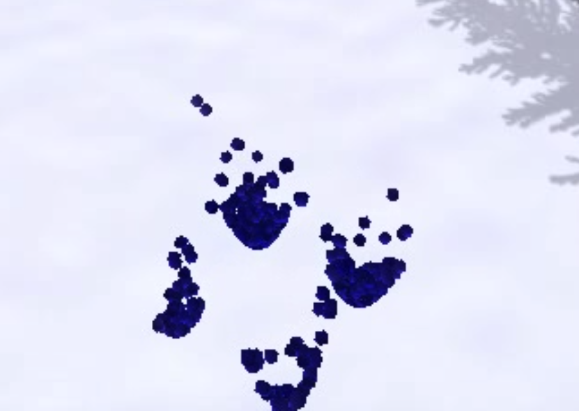
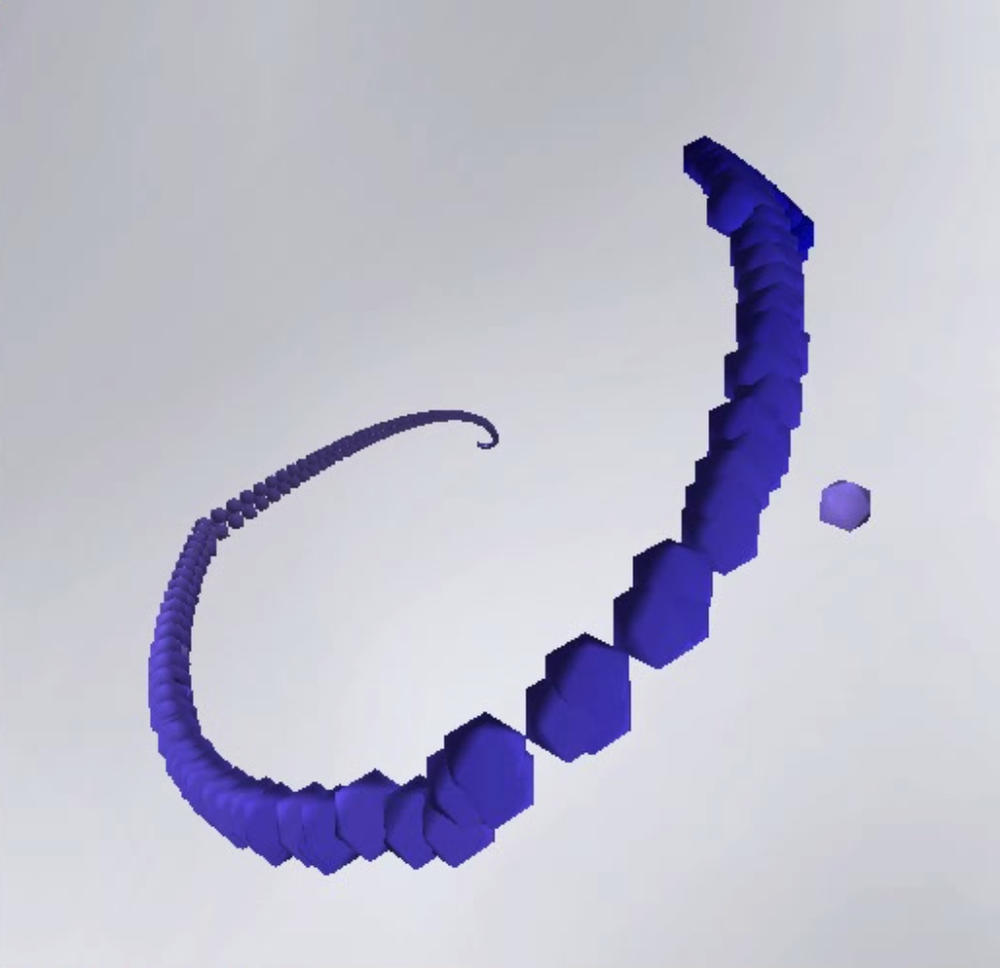

PA3: SPH Milestone Report
What I'm doing
For my project 3, I am attempting to implement an SPH fluid simulation based on a State of the Art report published in Eurographics 2014 by Jens Orthmann, Barbara Solenthaler, Andreas Kolb, and Matthias Teschner. The basic idea is to use a particle system to simulate a fluid based on the Lagrangian formulation of the Navier-Stokes equation.
As this is not one of the given project ideas, I cleared this with course staff via a private Piazza post on May 16.
What I've done so far
So far, I have the basic fluid simulation pretty much working. I've implemented the simulation itself based on algorithm 1 (SPH With state equation) of the STAR report and it works for the most part. The particles are a bit more energetic than I'd like, and I still occasionally get random NaN's in my particles, but overall it looks very much like water.
I'm currently constraining the particles to a region defined by y = f(x, z), where f is an everywhere-differentiable function. This is important because the partial derivatives of x and z must also be provided to enable me to find tangent planes of the surface.

Transitioning between surfaces
If you click on the image above, you'll see a demonstration of the functionality that I've added to smoothly interpolate between surfaces. I am currently drawing a subset of the entire surface centered at (0, 0), which ranges from +/- infinity in both x and z. The user can toggle drawing the surface on or off. I do not currently triangulate a mesh for the surface, and instead just draw it using a particle mesh at various points. Visualization of the surface itself isn't really the goal here, so I may or may not get around to doing something nicer. However I feel that some visualization is important because it helps the view get a sense of what is going on.
Click on the image below to see a demo of the simulation in action.
The simulation in action
Here you can see the system in action, both with and without the surface being shown. As you can see the particles area bit more energetic than I'd like, but overall it behaves in a pretty reasonable way.
An artistic shot of the action
As you can see from the first section of the STAR report, we need to sum over all neighbors of each particle in order to approximate the Navier-Stokes equation. Since this is inherently O(n^2), we need to find a way to do this with a better time complexity. In order to do this, I've implemented a spatial hash table. I have a map from positions to sets of particles. The map hashes a particle into a set based on where it fits in a 3 dimensional grid. The grid cells are cubes the size of the support radius of the particle. Since the kernel function returns zero for any particle more than the support radius away, we don't need to test them. Thus, to sum over each neighbor, one only needs to check the 27 cells centered on the one that the particle is in. Due to how the physics works out, this ends up being a fairly small number of particles, much less than the total number of particles in the system.
What I'd like to get done
As I hope you'd agree, I have a fairly reasonable fluid simulation already implemented. However, it's not quite right yet. The particles are a bit more energetic than I'd like, and I plan to continue to tune the physics parameters to get them more in line with reality. In addition to that, I'd like to improve the overall interactivity of the program. After all, what good is a physics simulation if you can't play with it? Specifically, ways to exert additional forces on the water and see how it behaves. For example, I could add wind. I could also manipulate gravity to see how the fluid behaves.
I hope to begin winding down work on the physics sooner than later. If I'm am able to this, I'd like to focus on rendering. I currently have the spatial hash table representation that is more or less a voxel representation of the fluid surface. I'd like to explore rendering the voxel surface. At the very least, I imagine I can get Minecraft style rendering working. Ideally, I can implement marching cubes. To do all of this, I may need an additional datastructure such as an Octree in order to facilitate triangulating the surface.
Another option I may pursue is to add multiple different types of fluids with different viscosities or densities. I could add "oil" to the "water" and hopefully they should separate. I could also add colored fluids, and try to advect the color through the fluid in a physically-correct way.
Finally, it'd be nice if I could add parallelism to increase the number of particles. I'm currently drawing 500 particles, and this is already impacting my frame rates under certain circumstances. My implementation is currently single-threaded, but is written in a way that it shouldn't be too hard to add concurrency. Alternatively I could investigate using a compute shader to accelerate the physics calculations. This would require me to upgrade my renderer to OpenGL 4.5, and I don't really know how difficult or easy this would be.
This is a lot of stuff, and I'm obviously not going to be able to do all of it. Overall, the goal for the next two weeks is just to refine it and make it look as nice as possible.
This site best viewed with Netscape Navigator
Download Netscape Now